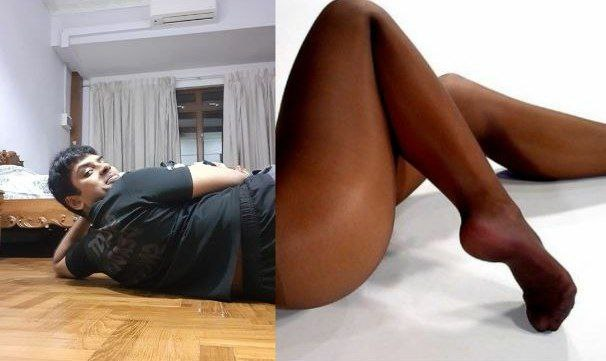

<!DOCTYPE html>
<html lang="en">
<head>
  <meta charset="UTF-8" />
  <title>Valentine?</title>
  <style>
    body {
      font-family: Arial, sans-serif;
      text-align: center;
      background: #ffe6eb;
      padding-top: 50px;
      padding-top: 150px;
    }

    img {
      width: 300px;
      width: 600px;
      border-radius: 12px;
      margin-bottom: 20px;
    }
@@ -24,7 +24,7 @@
    .buttons {
      margin-top: 30px;
      position: relative;
      height: 200px;
      height: 600px;
    }

    button {
@@ -49,30 +49,56 @@
<body>

  
  <h1>Will you be my Valentine? 💖</h1>
  <h1> Savithaa will you be my Valentine? 💖</h1>

  <div class="buttons">
    <button id="yes" onclick="yesClicked()">Yes</button>
    <button id="no">No</button>
  </div>

  <script>
    const noButton = document.getElementById("no");
  const noButton = document.getElementById("no");
  const buttonsBox = document.querySelector(".buttons");

    noButton.addEventListener("mouseover", () => {
      const x = Math.random() * 300 - 150;
      const y = Math.random() * 150 - 75;
  function moveNoButton() {
    // Keep the button within the buttons area so it doesn't fly off-screen
    const boxRect = buttonsBox.getBoundingClientRect();
    const btnRect = noButton.getBoundingClientRect();

      noButton.style.transform = `translate(${x}px, ${y}px)`;
    });
    const maxX = boxRect.width - btnRect.width;
    const maxY = boxRect.height - btnRect.height;

    function yesClicked() {
      document.body.innerHTML = `
        <h1>💘 I knew you'd choose yes 💘</h1>
        <p>You’re stuck with me now 😌</p>
      `;
    }
  </script>
    const x = Math.random() * maxX;
    const y = Math.random() * maxY;

    noButton.style.left = `${x}px`;
    noButton.style.top = `${y}px`;
    noButton.style.transform = "none"; // we're using left/top now
  }

  // Desktop: when mouse goes over the button, move it
  noButton.addEventListener("mouseover", moveNoButton);

  // Mobile: when user tries to tap the button, move it away
  noButton.addEventListener("touchstart", (e) => {
    e.preventDefault(); // prevents the tap from "clicking" the button
    moveNoButton();
  }, { passive: false });

  // Mobile: if their finger moves near/over it, keep dodging
  noButton.addEventListener("touchmove", (e) => {
    e.preventDefault();
    moveNoButton();
  }, { passive: false });

  function yesClicked() {
    document.body.innerHTML = `
      <h1>💘 I knew you'd choose yes 💘</h1>
      <p>You’re stuck with me now 😌</p>
    `;
  }
</script>

</body>
</html>

</html>


